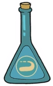

In-Game Description
"Great coverage with average damage. Aim backward for maximum range."
Regular Attack
The Roundabout
The Roundabout is a unique weapon that fires projectiles that curve around the player in a 180-degree arc.
It’s great for hitting enemies behind you or those that are approaching from the side. The projectiles deal moderate damage and can be very effective in tight spaces.
The weapon’s curve means you don’t have to face enemies directly to deal damage, making it useful for players who like to keep moving or avoid enemy attacks.
However, the Roundabout’s shots can be harder to aim in situations where precise targeting is needed.
Super Attack
Jumbo Rebound
The Jumbo Rebound enhances the Roundabout’s curved shots, allowing them to travel farther and deal more damage.
After the shot leaves the player, it loops back around, hitting enemies multiple times before returning to the player.
This super attack is excellent for multi-phase bosses or large groups of enemies where you can maximize the damage of returning shots.
Statistics
| Weapon | Damage | DPS | Price | Fire Delay (Frames) |
|---|---|---|---|---|
| Roundabout | 8.5 | 31.875 | 4 coins | 16 Frames |
| Jumbo Rebound | 40 | 62.341 | 4 coins | 34 Frames |